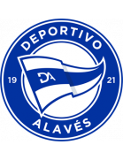
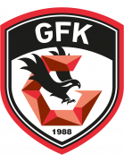

| Date | Fixture Bold-faced team is selected by AIGoalie to win. | Odds Pre-match odds of the selected team winning. | Win How confident AIGoalie is that the selected team will win. Low confidence indicates unpredictability of the match. ▼ | Result Whether the selected team won, drew, or lost. | Over The minimum number of goals predicted by AIGoalie. ⚽ = over 0.5 ⚽⚽ = over 1.5 ⚽⚽⚽ = over 2.5 ... ► |
Alerts Home 🏥 = Considerable injuries 🏥🏥 = Major injuries 📉 = Dip in form Note, you may see injuries when expanding match but no alert here, meaning the model does not consider them important. |
Alerts Away 🏥 = Considerable injuries 🏥🏥 = Major injuries 📉 = Dip in form Note, you may see injuries when expanding match but no alert here, meaning the model does not consider them important. |
|
|---|---|---|---|---|---|---|---|---|
| May 18 | Sp Lisbon 3:0 Chaves Form: DWW Form: LLL |
3.43 vs -4.99 | 1.09 | 94% | 1 | ⚽⚽⚽ 3.34 |
🏥🏥 📉 Away team has MAJOR injuries and a dip in form recently | |
| May 18 | Leverkusen 2:1 Augsburg Form: DWW Form: LLL |
2.0 vs -3.2 | 1.31 | 80% | 1 | ⚽⚽ 2.2 |
🏥 📉 Away team has considerable injuries and a dip in form recently | |
| May 18 | Dortmund 4:0 Darmstadt Form: LWL Form: LLL |
1.91 vs -3.55 | 1.18 | 79% | 1 | ⚽⚽ 2.6 |
📉 Home team has a dip in form recently | 🏥🏥 📉 Away team has MAJOR injuries and a dip in form recently |
| May 18 | Stuttgart 4:0 M'gladbach Form: DWW Form: DDD |
1.29 vs -2.5 | 1.3 | 73% | 1 | ⚽⚽ 2.53 |
📉 Away team has a dip in form recently | |
| May 18 | Lecce 0:2 Atalanta Form: DDL Form: WWW |
-1.93 vs 0.63 | 1.81 | 55% | 1 | ⚽ 1.96 |
🏥 📉 Home team has considerable injuries and a dip in form recently | |
| May 18 | Besiktas 2:2 Hatayspor Form: LWD Form: LDW |
0.61 vs -2.23 | 1.54 | 54% | 0.5 | 😴 0.95 |
🏥🏥 📉 Home team has MAJOR injuries and a dip in form recently | 🏥 📉 Away team has considerable injuries and a dip in form recently |
| May 18 | Heidenheim 4:1 FC Koln Form: WDD Form: DDW |
0.43 vs -1.81 | 2.46 | 45% | 1 | ⚽ 1.22 |
📉 Home team has a dip in form recently | 🏥🏥 📉 Away team has MAJOR injuries and a dip in form recently |
| May 18 | Moreirense 2:1 Estoril Form: WWW Form: WLL |
0.37 vs -1.65 | 2.32 | 40% | 1 | ⚽ 1.1 |
🏥 Home team has considerable injuries | 📉 Away team has a dip in form recently |
| May 18 | Standard 1:4 Gent Form: DDL Form: WWL |
-1.92 vs 0.32 | 1.89 | 36% | 1 | ⚽⚽ 2.48 |
🏥🏥 📉 Home team has MAJOR injuries and a dip in form recently | |
| May 18 | Torino 3:1 Milan Form: LDW Form: DDW |
-1.79 vs 0.25 | 2.8 | 30% | 0 | ⚽ 1.23 |
🏥🏥 📉 Home team has MAJOR injuries and a dip in form recently | 🏥 📉 Away team has considerable injuries and a dip in form recently |
| May 18 | Alaves  1:0 Getafe Form: WDL Form: LLL |
0.25 vs -1.44 | 2.16 | 30% | 1 | ⚽ 1.36 |
📉 Home team has a dip in form recently | 🏥 📉 Away team has considerable injuries and a dip in form recently |
| May 18 | Farense 1:3 Portimonense Form: WWL Form: LLD |
0.21 vs -1.83 | 2.64 | 27% | 0 | ⚽ 1.98 |
🏥🏥 📉 Away team has MAJOR injuries and a dip in form recently | |
| May 18 | Hoffenheim 4:2 Bayern Munich Form: LDW Form: WLW |
-2.05 vs 0.18 | 2.08 | 25% | 0 | ⚽⚽⚽ 3.92 |
🏥 📉 Home team has considerable injuries and a dip in form recently | 🏥🏥 Away team has MAJOR injuries |
| May 18 | Werder Bremen 4:1 Bochum Form: WDD Form: WWL |
0.04 vs -1.46 | 2.44 | 13% | 1 | ⚽⚽ 2.06 |
🏥🏥 📉 Home team has MAJOR injuries and a dip in form recently | |
| May 18 | Boavista 2:2 Vizela Form: LDL Form: DLW |
0.04 vs -1.06 | 1.61 | 13% | 0.5 | ⚽ 1.54 |
📉 Home team has a dip in form recently | 📉 Away team has a dip in form recently |
| May 18 | Buyuksehyr 0:1 Trabzonspor Form: WWW Form: WLW |
0.01 vs -1.39 | 2.62 | 11% | 0 | ⚽ 1.89 |
🏥🏥 Away team has MAJOR injuries | |
| May 18 | Union Berlin 2:1 Freiburg Form: DLL Form: LDD |
-0.21 vs -1.26 | 2.2 | 6% | 1 | ⚽ 1.22 |
📉 Home team has a dip in form recently | 🏥🏥 📉 Away team has MAJOR injuries and a dip in form recently |
| May 18 | Wolfsburg 1:3 Mainz Form: WWL Form: DDW |
-0.24 vs -1.07 | 3.3 | 5% | 0 | ⚽ 1.03 |
🏥🏥 Home team has MAJOR injuries | 📉 Away team has a dip in form recently |
| May 18 | Ein Frankfurt 2:2 RB Leipzig Form: LLD Form: WDD |
-0.98 vs -0.25 | 2.48 | 5% | 0.5 | ⚽⚽ 2.6 |
📉 Home team has a dip in form recently | 🏥 📉 Away team has considerable injuries and a dip in form recently |
| May 18 | Samsunspor 1:1 Alanyaspor Form: LWL Form: WDD |
-0.27 vs -1.58 | 2.22 | 5% | 0.5 | ⚽ 1.38 |
📉 Home team has a dip in form recently | 🏥🏥 📉 Away team has MAJOR injuries and a dip in form recently |
| May 18 | Gaziantep  3:1 Karagumruk Form: LDW Form: WDL |
-0.27 vs -1.25 | 2.42 | 5% | 1 | ⚽⚽ 2.14 |
🏥 📉 Home team has considerable injuries and a dip in form recently | 🏥 📉 Away team has considerable injuries and a dip in form recently |
| May 18 | Westerlo 0:2 Mechelen Form: DLD Form: WLL |
-1.19 vs -0.27 | 2.48 | 5% | 1 | ⚽⚽ 2.91 |
📉 Home team has a dip in form recently | 🏥🏥 📉 Away team has MAJOR injuries and a dip in form recently |
| May 18 | Estrela 1:0 Gil Vicente Form: LDL Form: DDW |
-0.74 vs -0.32 | 4.8 | 4% | 0 | 😴 0.82 |
📉 Home team has a dip in form recently | 📉 Away team has a dip in form recently |
| May 18 | Arouca 1:3 Guimaraes Form: DDL Form: WLL |
-0.38 vs -1.19 | 2.8 | 2% | 0 | ⚽ 1.72 |
🏥🏥 📉 Home team has MAJOR injuries and a dip in form recently | 📉 Away team has a dip in form recently |
| May 18 | Kayserispor 2:2 Konyaspor Form: WDL Form: LDW |
-1.19 vs -0.47 | 3.2 | 1% | 0.5 | ⚽ 1.12 |
🏥🏥 📉 Home team has MAJOR injuries and a dip in form recently | 📉 Away team has a dip in form recently |
| May 18 | Sp Braga 0:1 Porto Form: LWW Form: DWW |
-0.48 vs -0.69 | 3.35 | 0% | 0 | ⚽⚽ 2.24 |
🏥 Home team has considerable injuries | |
| May 18 | Ankaragucu 0:0 Pendikspor Form: DDL Form: LWW |
-0.53 vs -0.7 | 2.0 | 0% | 0.5 | ⚽ 1.63 |
🏥 📉 Home team has considerable injuries and a dip in form recently | |
| May 18 | Rizespor 0:0 Kasimpasa Form: DLL Form: WLW |
-0.92 vs -0.93 | 2.34 | 0% | 0.5 | ⚽⚽ 2.75 |
🏥🏥 📉 Home team has MAJOR injuries and a dip in form recently | 🏥 Away team has considerable injuries |
Last updated 16:04:50 2024-05-22
Privacy Policy - 18+. Gamble Responsibly. - Terms